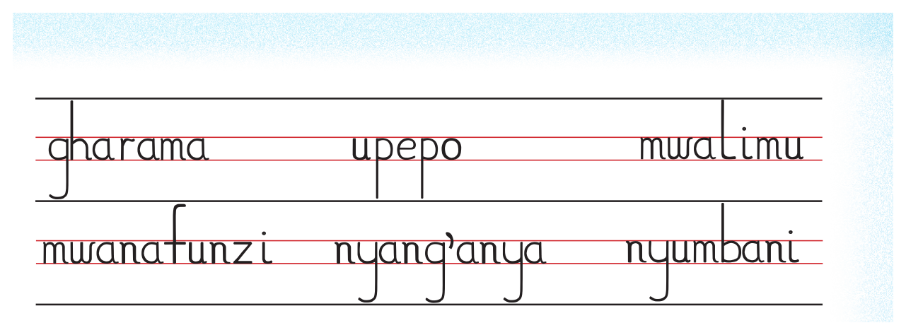
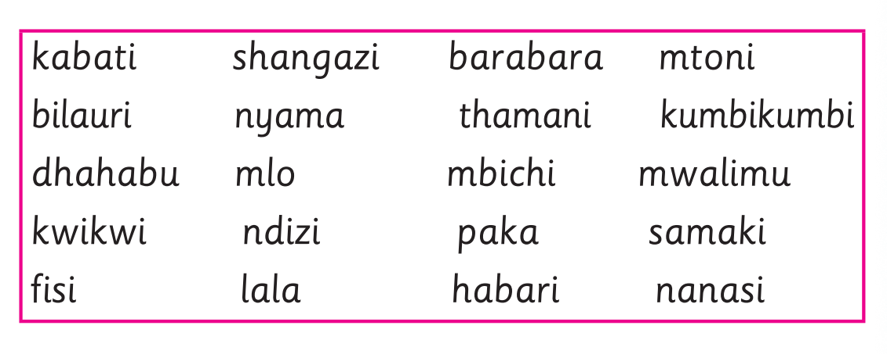
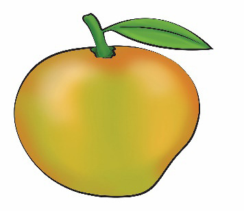

Nakili maneno sita yanayoendelea kutoka ukurasa uliotangulia; tumia eneo la kuandikia, kibodi au Breli.

Mfano wa maneno sita kwa mwandiko wa chapa wenye vikonyo: gharama, upepo, mwalimu, mwanafunzi, nyang'anya na nyumbani.Eneo la kuandikia lina mistari minne ya mwandiko: mstari wa juu, mistari miwili myekundu ya urefu wa herufi ndogo na mstari wa chini kwa vikonyo.
Andika maneno ishirini yaliyomo kwenye kisanduku kwa mwandiko wa chapa wenye vikonyo; tumia eneo la kuandikia, kibodi au Breli.

Kisanduku chenye maneno ishirini: kabati, shangazi, barabara, mtoni, bilauri, nyama, thamani, kumbikumbi, dhahabu, mlo, mbichi, mwalimu, kwikwi, ndizi, paka, samaki, fisi, lala, habari na nanasi.Eneo la kuandikia lina mistari minne ya mwandiko: mstari wa juu, mistari miwili myekundu ya urefu wa herufi ndogo na mstari wa chini kwa vikonyo.
Shughuli ya kwanza
Tazama picha zifuatazo, kisha andika jina la kila picha kwa mwandiko wa chapa wenye vikonyo.
Tambua embe kwa kulitazama, kuchunguza tunda halisi au mchoro mguso, kisha andika jina lake; tumia eneo la kuandikia, kibodi au Breli.

Embe la manjano na kijani lenye jani moja.Eneo la kuandikia lina mistari minne ya mwandiko: mstari wa juu, mistari miwili myekundu ya urefu wa herufi ndogo na mstari wa chini kwa vikonyo.